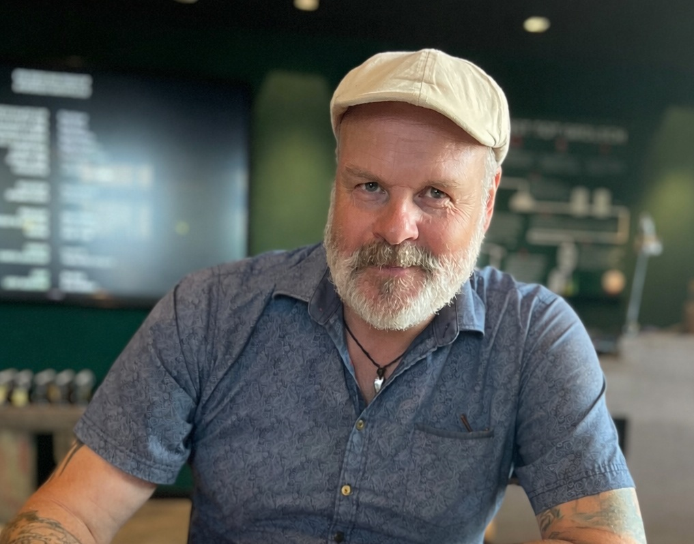

Per Persson, Ph.D.
Forskning, publikationer och tankar i bloggform. Här samlas mitt arbete och de tjänster jag erbjuder.
Mitt expertområde inom forskningen är hur offentlig sektor kan minska beroendet av gamla IT-system, leverantörsinlåsning och organisatoriska utmaningar
för att bygga öppna, hållbara och medborgarcentrerade digitala lösningar - lösningar som både ökar medborgarnyttan och effektiviserar verksamheten.
Med c:a 30 års praktisk erfarenhet som IT-expert har jag dessutom en stabil grund att stå på - min forskning är alltid starkt knuten till praktik och ambitionen
är alltid att göra skillnad.
